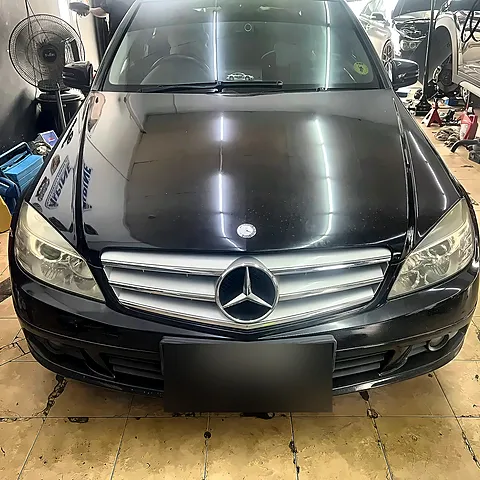
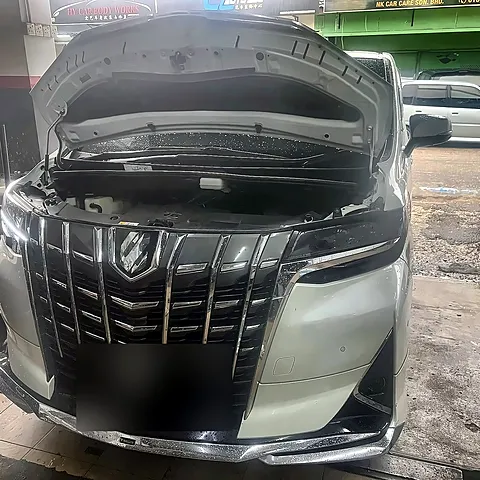
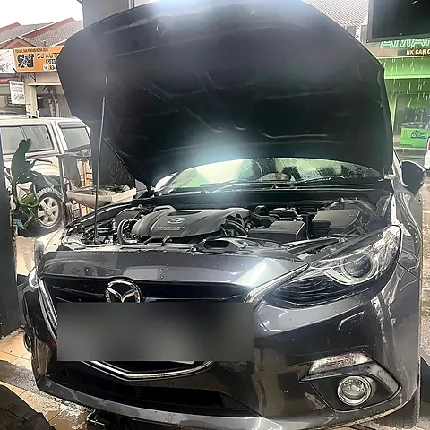
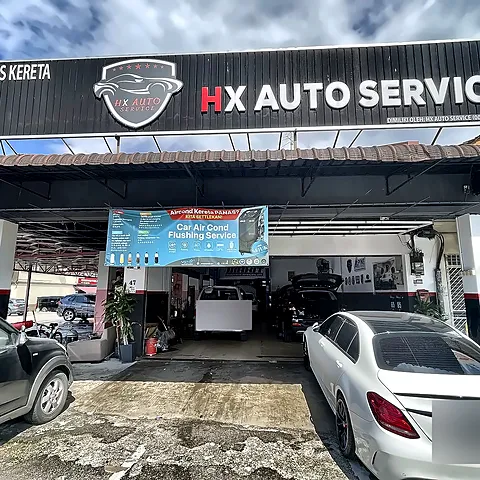
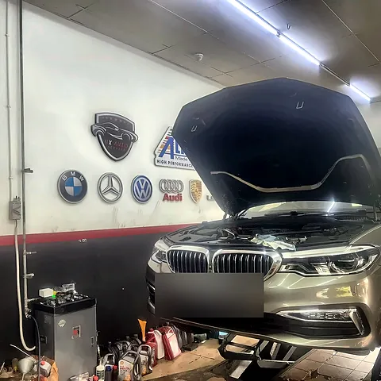
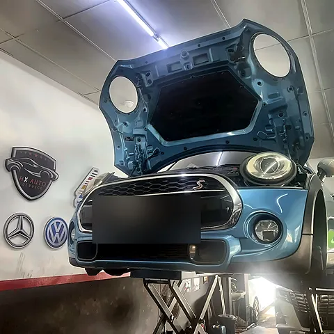
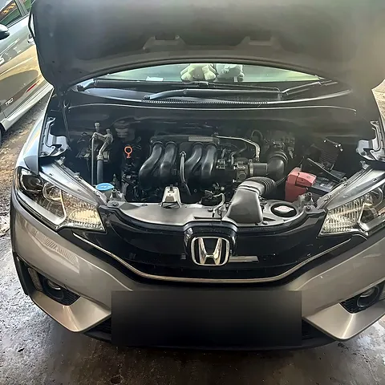
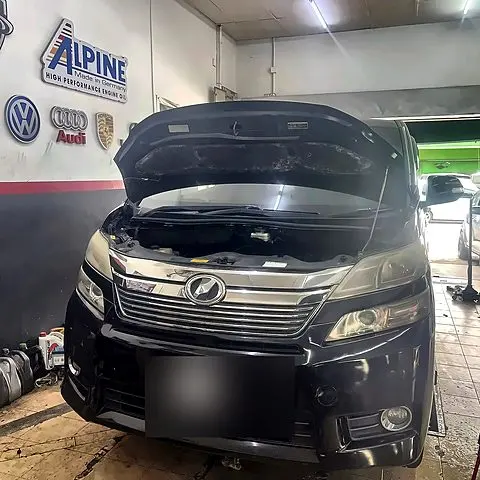
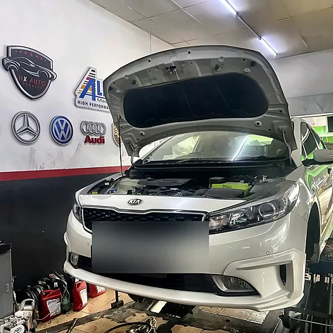

- Taman Bukit Indah, Iskandar Puteri
- 周一至周六 9:30am 至 7:30pm
- 欧洲车和日本车
- 靠近第二通道
工位实拍
我们车间的真实车辆。点选照片看大图。
工位上出现过的品牌
- Mercedes-Benz
- BMW
- Toyota Alphard
- Toyota Vellfire
- Honda
- Kia
- Mazda
- Mini
- Subaru
- Nissan
- Lexus
- Land Rover
- Volkswagen
顾客怎么说
sent car for suspension and absorber sets; recommend to BMW drivers; price affordable
MdGoogle 评价
young boss found a part from KL when other JB workshops couldn't; washed car after; really pleased
SeanGoogle 评价
Alex, workshop manager, expert at diagnosing/repairing Japanese and Continental vehicles
WilsonGoogle 评价
15 min from Tuas checkpoint; Alex professional
JoelleGoogle 评价
更多评价 (6)
very nice chatty young boss, good service, honesty, hard working, strongly recommended
admenGoogle 评价
Lexus 250 - vibration, engine mounts, steering noise, tyre sensors all resolved by Alex and team
TanGoogle 评价
original parts, good service, easy to chat with
ShaGoogle 评价
great service from the team, really happy
盈Google 评价
suspension and absorber sets done, good job, affordable
RiziqFacebook 推荐
4 years of servicing, honest boss, quick response, fair prices, finds parts
WinnieFacebook 推荐
摘自 Google 和 Facebook 上的评价，保留原文，只显示名字。
怎么进行
- 1
WhatsApp
发车型、年份和你察觉到的情况。
- 2
诊断
我们接上扫描仪，读取故障码，再检查车子。
- 3
修好
根据扫描和检查的结果进行维修，然后到 Taman Bukit Indah 取车。
告诉我们你的车出了什么状况。
WhatsApp 发车型、年份和你察觉到的情况。
车主常问
HX Auto Service 在哪里？
在 47 Jalan Indah 16/11, Taman Bukit Indah, 79100 Iskandar Puteri, Johor Bahru。修车厂靠近 Second Link。
怎样预约？
请 WhatsApp 011-6776 1138，告诉我们车型、年份和你察觉到的情况。也可以拨打同一个号码。
在 Taman Bukit Indah 找到我们
只有一间修车厂，在 47 Jalan Indah 16/11，靠近 Second Link。
营业时间
| 星期一 | 上午9:30 至 晚上7:30 |
|---|---|
| 星期二 | 上午9:30 至 晚上7:30 |
| 星期三 | 上午9:30 至 晚上7:30 |
| 星期四 | 上午9:00 至 晚上7:30 |
| 星期五 | 上午9:30 至 晚上7:30 |
| 星期六 | 上午9:30 至 晚上7:30 |
| 星期日 | 休息 |